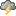

Reactor Dependency Convergence
|  | Au moins un projet a une dépendance de version différente. |
| Nombre de sous-projets : | 6 |
|---|---|
| Nombre de dépendances (NOD) : | 12 |
| Nombre d'artefacts uniques (NOA) : | 13 |
| Number of version-conflicting artifacts (NOC): | 0 |
| Nombre d'artefacts SNAPSHOT (NOS) : | 0 |
| Convergence (NOD/NOA) : | 92 % |
| Prêt pour la release (100% de convergence et aucun SNAPSHOT) : | Erreur Vous n'avez pas la convergence à 100%. |